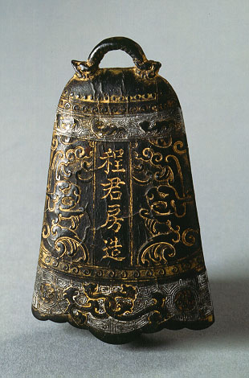

義助慰安婦
—— 李敖百件珍藏義賣藝術品（第34件）
品 名： C3. 成親王論墨及程君房造墨（兩件一組） 預估價： 30 萬 成交價： 30 萬 說 明： 成親王為乾隆皇帝第十一子，楷書之佳，至今無出其右者，他年老時曾寫了一段話評論宋朝一位有名的製墨專家李廷邽：「李廷邽墨，邽字者為上，圭字者次之，珪字者又次之……」表示李廷珪的墨有上、中、下三級，成親王並於文後蓋上「皇十一子」之章。成親王因年老已忘記上段話的出處，據李敖考證為元朝陸友《墨史》中的話，清朝大學者俞樾於《春在堂全書》中也提過這句話。
另一個如鐘型的墨，為明朝程君房所製，名墨也。
